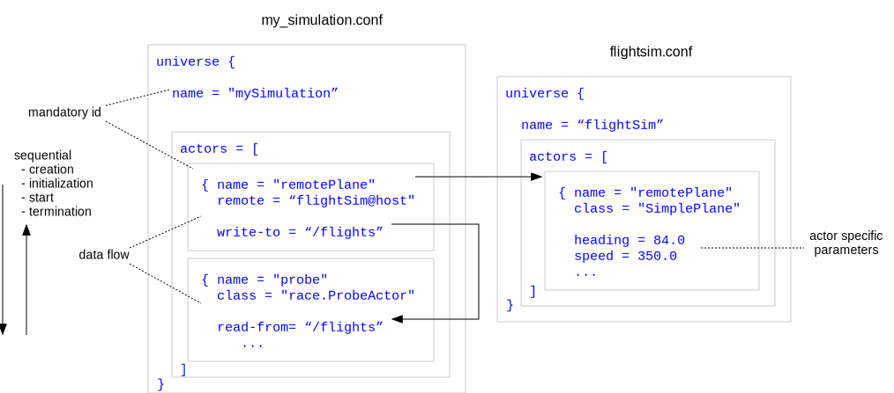
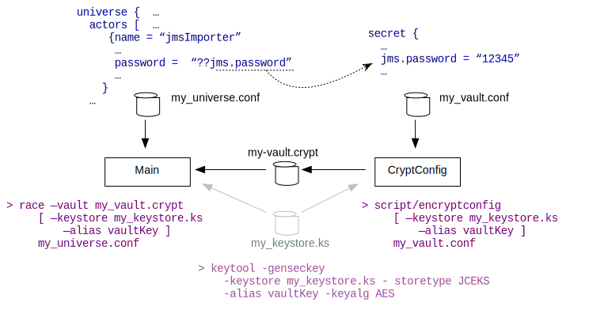

Runtime Configuration
Concrete RACE applications are not hard coded. They are defined by configuration files that specify which actors the application consists of, how these actors communicate, and what parameters they take.
The underlying library to process configuration files is the same TypesafeConfig library that is used by Akka itself, hence all configuration (Akka and RACE) can be done through a single, consistent mechanism and the same text file(s). While TypesafeConfig supports various formats such as XML and Java properties, we promote the use of HOCON (Human-Optimized Config Object Notation). RACE configuration files can get large, and HOCON's more readable syntax and especially factorization features (includes, string interpolation) are helpful to understand configurations.
The underlying data model is a tree of key/value elements, where each value is either a primitive (String, Boolean, Int etc.), an object (set of key/value pairs "{..}"), or an array of element values "[..]".
Config File Format
A typical RACE configuration file looks like this:
// example RACE configuration
universe = {
name = "SimpleProbe" // name of universe
actors = [ // list of actor objects
{ name = "aircraft" // name of actor
class = "gov.nasa.race.actors.models.SimpleAircraft" // class of actor
write-to = "/flights/positions" // channel this actor writes to
...
},
{ name = "probe"
class = "gov.nasa.race.actors.viewers.ProbeActor"
read-from = "/flights/positions" // channel this actor reads from
}
]
include classpath("config/logging-race.conf")
}The top element of a RACE configuration is a universe object, which holds two main sub-elements:
nameidentifies this RACE instance at runtime so that it can be referenced from remote RACEsactorsis a list of the actor specifications this RACE instance consists of
Each actors element describes a single RaceActor instance, identified by name and
respective implementation class. Communication between RaceActors happens through bus
channels, which are specified as path strings such as /flights/positions. Output channels of
RaceActors are specified with a "write-to" element that can hold either a single string or an array
of strings. Input channels are configured with respective "read-from" elements. Note that channels
do not need to be defined separately as they are merely selectors for the Akka EventBus at runtime.
The read-from values can contain wildcards such as flights/*, which allow subscriptions to
a whole sub-tree of channels.
Depending on the concrete RaceActor class, each actors element can also hold class specific
parameters.
Communication between different RACE instances (processes) is done by means of remote actors, as shown by the following diagram:

Here, the remotePlane actor of the mySimulation universe (to the left) does not contain a
class specification, but instead has a remote element that holds a URI that specifies the
hostname and universe name of the remote RACE (to the right). Remote actors can either be
started by the remote configuration, or upon request from the referencing universe. The first case
represents a remote lookup that allows to split respective actor configuration into local and
remote settings.
Encrypted Configurations
Some RaceActors might need to be parameterized with values that are confidential, such as
user credentials or non-public URIs. RACE supports this case by means of encrypted configuration
values - instead of having a pain text parameter specification such as password = "12345", a
symbolic value prefixed by ?? (such as password = ??server.pw) is used. This symbolic value
(e.g. server.pw) is a key into a special, encrypted vault configuration file that is specified
alongside the normal configuration file when starting RACE.

Vault files are encrypted with symmetric ciphers (either user provided or retrieved from a
keystore). Vault values are never stored as plain text at runtime, and have to be retrieved by
actors by means of special APIs. The top element of a vault configuration file has to be named
secret.
Please refer to the Using Encrypted Configurations section for a description of related tools and commands to create vaults and/or keystores.